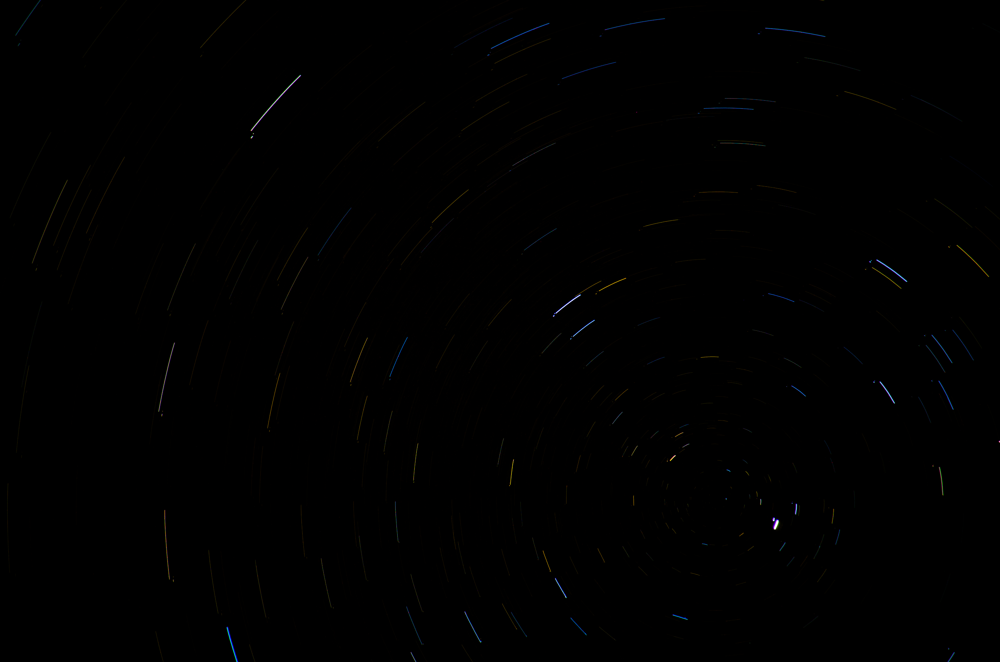

The North Star, formally known as Polaris (Alpha Ursae Minoris, or α UMi), is the current northern pole star — a star that lies almost directly above Earth's geographic North Pole. Because of this alignment, Polaris appears nearly stationary in the night sky while all other stars trace arcs around it over the course of a night. It is located in the constellation Ursa Minor, at the end of the handle of the 'Little Dipper' asterism, at a distance of approximately 446 light-years (137 parsecs) from Earth.

Credit: Heyzeuss / CC BY-SA 3.0
{kind=link}
Polaris is not the brightest star in the sky — that distinction belongs to Sirius — and at an apparent magnitude of approximately 1.98, it ranks around 48th in brightness. Its unique importance lies entirely in its positional coincidence with the celestial north pole. For an observer in the northern hemisphere, the altitude of Polaris above the horizon equals the observer's geographic latitude, making it an invaluable tool for navigation: mariners and travellers have used it to determine north and measure latitude for millennia. The Phoenicians used Ursa Minor (with Polaris) for navigation by the sea; Greek sailors preferred Ursa Major. Medieval Islamic astronomers refined the technique, and by the era of transatlantic exploration the 'altitude of Polaris' method was computationally simpler than solar noon observations. Many cultures gave the pole star a name reflecting constancy: Hindu tradition called it Dhruva ('fixed'), while in China it was known as 天枾 (Tiānshū, 'Heaven's Pivot').
Polaris Aa, the primary component, is a yellow supergiant of spectral type F7Ib with a surface temperature of approximately 6,015 K, a luminosity of about 1,260 times that of the Sun, and a mass of around 5.13 solar masses. It is also a classical Cepheid variable — a pulsating star whose brightness and radius oscillate on a precise, repeatable period of approximately 3.97 days. The amplitude of this variation is only about 0.03 magnitudes, far too small to detect with the naked eye. Polaris is the closest Cepheid variable to Earth, and this proximity makes it a foundational calibration object for the cosmic distance ladder: the chain of methods used to measure distances across the universe. Unusually, the pulsation amplitude of Polaris has been decreasing over recent decades and its period has been slowly lengthening, behaviours that are not fully explained by standard Cepheid pulsation theory and remain the subject of ongoing research. In 2024, Evans et al. used the CHARA Array optical interferometer to measure the angular diameter of Polaris Aa directly, obtaining a radius of approximately 46 solar radii and finding evidence for possible surface brightness features.
Polaris is a triple star system. The primary, Polaris Aa, is orbited by a close F6 main-sequence companion (Polaris Ab) on a roughly 30-year orbit, detected through radial velocity variations. A third, more distant companion (Polaris B, spectral type F3V) is separated from the primary by approximately 2,400 astronomical units and can be resolved with a small telescope; it was first identified by William Herschel in 1779.
The alignment of Polaris with Earth's rotational axis is not permanent. Earth's axis wobbles slowly like a spinning top under gravitational torques from the Moon and Sun — a process called axial precession with a cycle of approximately 25,770 years. Polaris will reach its closest approach to the celestial north pole (within about 0.45°) in February 2102, after which it will drift away. Other stars have served as pole stars in the past: Thuban (α Draconis) was the pole star around 3000 BC, when ancient Egyptian pyramid shafts were aligned with that era's pole, while Kochab (β UMi) held the role from roughly 1700 BC to 300 AD. Future pole stars will include Gamma Cephei (around 3100 AD), Deneb (around 9800 AD), and Vega (around 14,500 AD). The southern celestial pole has no equivalent to Polaris: its current nearest bright marker, Sigma Octantis, has an apparent magnitude of only 5.5 and is barely visible to the unaided eye.
See also: celestial poles, Cepheid variable stars, stellar evolution, apparent magnitude, axial precession.